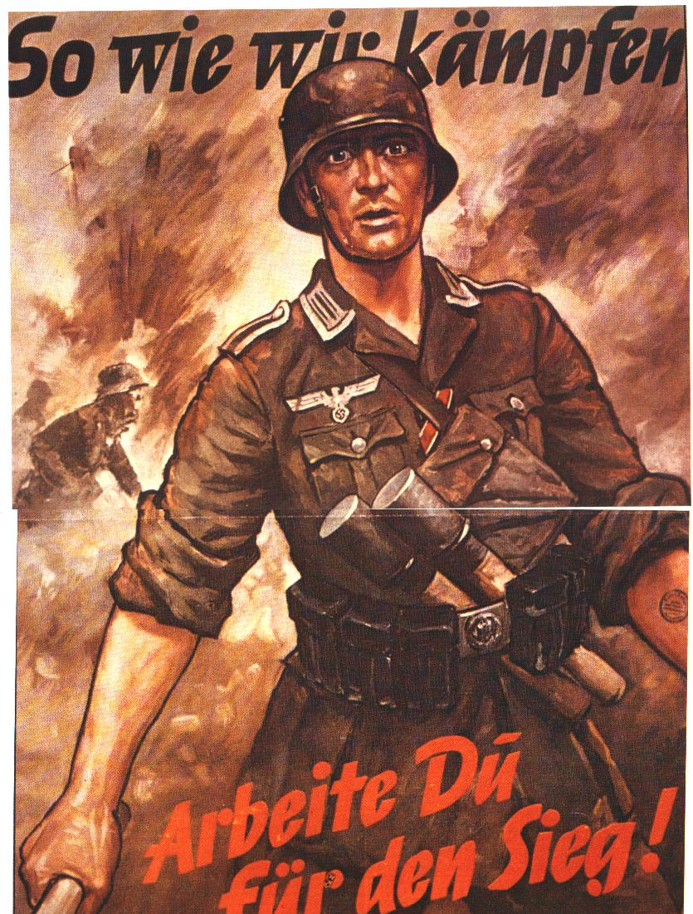
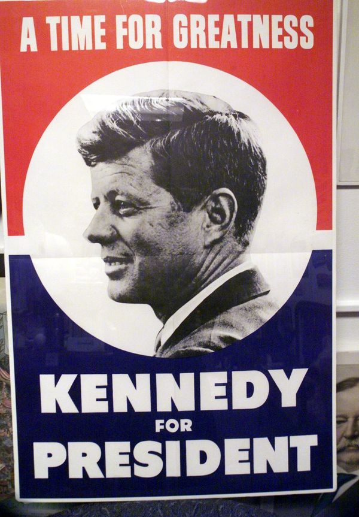

How Entities Use Propaganda
Propagandic Intent
|
Propaganda may be used for religious, wartime, advertising, and political affairs. They are used in this case to convince a demographic to believe the propagandist's side or points. For example, Propaganda shares techniques with advertising and public relations, each of which can be thought of as propaganda that promotes a commercial product or shapes the perception of an organization, person, or brand. Journalistic theory generally holds that news items should be objective. |
Propaganda was often used to influence opinions and beliefs on religious issues, particularly during the split between the Roman Catholic Church and the Protestant churches. More in line with the religious roots of the term, propaganda is also used widely in the debates about new religious movements (NRMs), both by people who defend them and by people who oppose them. Some social scientists accuse ex-members of "cults" and the anti-cult movement of making these unusual religious movements look bad without sufficient reasons. |
Propaganda has become more common in political contexts, in particular to refer to certain efforts sponsored by governments, political groups, but also often covert interests. In the early 20th century, propaganda was exemplified in the form of party slogans Propaganda also has much in common with public information campaigns by governments, which are intended to encourage or discourage certain forms of behavior. Propaganda exists on the political left, and right, and in mainstream centrist parties. |
Propaganda is a powerful weapon in war; it is used to dehumanize and create hatred toward a supposed enemy, either internal or external, by creating a false image in the mind of soldiers and citizens. This can be done by using derogatory or racist terms (e.g., the racist terms "Jap" and "gook" used during World War II and the Vietnam War, respectively), avoiding some words or language or by making allegations of enemy atrocities. The goal of this was to demoralize the opponent into thinking what was being projected was actually true. |
||||||||
|   | |||||||||||
|
These are all examples of propagandic posters. From top, then left to right: advertising, religious, wartime, and political. |
|||||||||||
|
Wikipedia defines propaganda as "information, especially of a biased or misleading nature, used to promote or publicize a particular political cause or point of view." |
Propaganda is today most often used in reference to political statements, but the word comes to our language through its use in a religious context. The Congregatio de propaganda fide (“Congregation for propagating the faith”) was an organization established in 1622 by Pope Gregory XV as a means of furthering Catholic missionary activity. |
||||||||||
|
|||||||||||